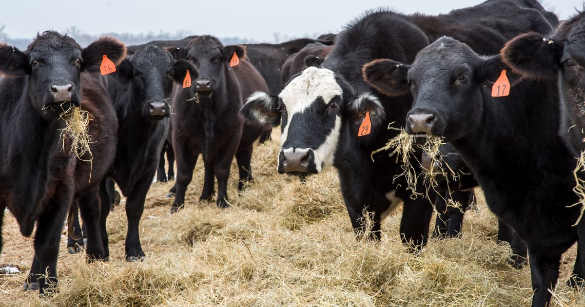
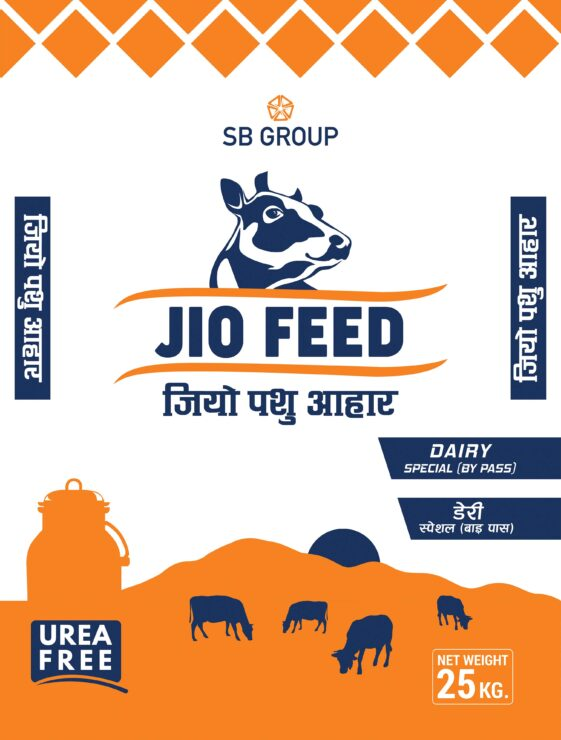

Our products:

- Diary products
- High nutritional milks are produced from healthy cows. Milk produced are use to create Diary products that is really good for health.

- Shiitake Mushroom
- A single serving of shiitake mushrooms provide 12% of your daily fiber needs which contains 2.3G of protein, 0.3G fat, 81 calories, 3G fiber, and 21G carbs

- Silage
- Silage is a type of fodder made from green foliage crops which have been preserved by fermentation to the point of acidification. It can be fed to cattle, sheep and other such ruminants (cud-chewing animals).

- Cucumbers
- Green long cucumber seeds which are available in our company(Kali kakra). These cucumbers help boost heart health and prevents the possible risk of cancer.

- Maize
- High yielding, pure seeds that is resistant to diseases. Variety of maize seeds are available according to topographical and geographical condition.

- Cattle Feed
- JIO cattle feed is made with the best quality of materials with cattle health kept in mind. We use a wide range of high protein grain to make the best feed. We also add various additives in the feed that will help the cattle digest the feed better thereby increasing milk yield.